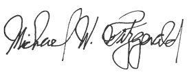

Case 2:22-cv-00051-MWF-JC Document 87 Filed 02/15/23 Page 1 of 5 Page ID #:1788
1
2
3
4
5
6
7
8
UNITED STATES DISTRICT COURT
9
CENTRAL DISTRICT OF CALIFORNIA
10
11 ACTIVISION PUBLISHING, INC., a
CASE NO. 2:22-cv-00051-MWF (JCx)
Delaware corporation,
12
ORDER GRANTING JOINT
Plaintiff,
STIPULATION FOR ENTRY OF
13
CONSENT JUDGMENT AND
v.
PERMANENT INJUNCTION
14
ENGINEOWNING UG, et al.,
15
Defendants.
Complaint Filed: 1/4/2022
16
Amended Complaint Filed: 9/16/2022
17
18
19
20
21
22
23
24
25
26
27
28
15167253.1
Case 2:22-cv-00051-MWF-JC Document 87 Filed 02/15/23 Page 2 of 5 Page ID #:1789
1
Pursuant to the Parties’ Stipulation dated January 31, 2023, the Court hereby
2 orders that judgment is entered against Defendant Ignacio Gayduchenko
3 (“Defendant”).
4
IT IS HEREBY FOUND, ORDERED, AND ADJUDGED as follows:
5
1.
Judgment shall be entered against Defendant in the amount of two
6 million dollars ($2,000,000), to be due and payable solely pursuant to the terms set
7 forth in the Parties’ Confidential Settlement Agreement and Release.
8
2.
Defendant shall immediately and permanently cease and desist from
9 knowingly or intentionally performing any of the following acts without
10 Activision's authorization:
11
a.
taking any steps (directly or indirectly through third parties) to
12 develop, program, code, create, distribute, update, support, advertise, market, resell
13 or otherwise make available the software products known as (i) “EngineOwning
14 for Call of Duty: MW and Warzone Caldera (2019),” (ii) “EngineOwning for Call
15 of Duty: MW2 and Warzone 2.0 (2022),” (iii) “EngineOwning for Call of Duty:
16 Warzone Caldera Lite,” (iv) “EngineOwning for Overwatch,” (v) “EngineOwning
17 for Call of Duty: Vanguard,” (vi) “EngineOwning for Call of Duty: Black Ops 3,”
18 (vii) “EngineOwning for Call of Duty: Black Ops 2,” (viii) “EngineOwning for
19 Call of Duty: Black Ops,” (ix) “EngineOwning for Call of Duty: WW2,” and (x)
20 “EngineOwning for Call of Duty: Modem Warfare 3,” (collectively, the
21 “EngineOwning Software”) or any other software designed to violate End-User
22 License Agreements or Terms of Service with respect to, infringe intellectual
23 property (i.e., copyrights, patents, or trademark) rights in, or circumvent
24 technological measures that effectively control access to (x) any of the Call of
25 Duty series of video games (“COD Cheating Software”) or (y) any other games
26 owned, published, distributed or operated by Activision or its parents, subsidiaries,
27 or affiliates (including Blizzard Entertainment, Inc.), of which Activision has
28 heretofore made Defendant actually aware, including but not limited to Overwatch
2
15167253.1
Case 2:22-cv-00051-MWF-JC Document 87 Filed 02/15/23 Page 3 of 5 Page ID #:1790
1 2, World of Warcraft, and Diablo (collectively, the “Activision Blizzard Games”)
2 (the “Activision Blizzard Cheating Software”). The software products referred to
3 above (i.e. the EngineOwning Software, COD Cheating Software, and Activision
4 Blizzard Cheating Software) are hereinafter referred to collectively as the
5 “Prohibited Software.”
6
b.
promoting, advertising, encouraging or inducing others to
7 purchase or use (including via any social media account, website, or video-sharing
8 account) the Prohibited Software;
9
c.
selling, reselling, or processing payments for the sale of any
10 Prohibited Software;
11
d.
assisting in any way with the further development of any
12 Prohibited Software;
13
e.
sharing, copying, transferring, or distributing the Prohibited
14 Software;
15
f.
publishing or distributing any source code or instructional
16 material for the creation of the Prohibited Software;
17
g.
operating or assisting in the creation or maintenance of any
18 website designed to provide information to assist others in accessing, developing
19 or obtaining the Prohibited Software;
20
h.
investing or holding any financial interest in any enterprise
21 which Defendant knows or has reason to know is now, or intends in the future to
22 be, engaged in any of the foregoing activities prohibited by this Judgment and
23 Permanent Injunction (including the development, sale, and distribution of any
24 Prohibited Software), including but not limited to the enterprise known as
25 “EngineOwning.”
26
i.
unlawfully reverse engineering, decompiling, packet editing, or
27 otherwise manipulating without authorization, any of the Activision Blizzard
28
3
15167253.1
Case 2:22-cv-00051-MWF-JC Document 87 Filed 02/15/23 Page 4 of 5 Page ID #:1791
1 Games in connection with the Prohibited Software or providing assistance to any
2 person or entity engaged in any such activities.
3
3.
Defendant shall take reasonable action to disable, remove, or
4 otherwise shut down any social network accounts under his control dedicated to
5 distribution or promotion of any Prohibited Software, and to remove any
6 information used to distribute any Prohibited Software from any non-dedicated
7 (e.g., personal) social network accounts under his control.
8
4.
Any company or entity that Defendant controls in the future shall also
9 comply with the provisions of this Judgment and Permanent Injunction.
10
5.
The Parties irrevocably and fully waive notice of entry of this
11 Judgment and Permanent Injunction and notice and service of the entered
12 Judgment and Permanent Injunction and understand, confirm and agree that
13 violation of the Judgment and Permanent Injunction will expose Defendant to all
14 penalties provided by law, including contempt of Court.
15
6.
The Parties irrevocably and fully waive any and all rights to appeal
16 this Judgment and Permanent Injunction, to have it vacated or set aside, to seek or
17 obtain a new trial thereon or otherwise to attack in any way, directly or collaterally,
18 its validity or enforceability.
19
7.
Nothing contained in this Judgment and Permanent Injunction shall
20 limit the right of the Parties to seek relief including, without limitation, damages
21 for any and all infringements of any Intellectual Property rights or for violation of
22 the anti-circumvention provisions of the DMCA occurring after the date of this
23 Judgment and Permanent Injunction.
24
8.
The Court shall retain jurisdiction of this action to entertain such
25 further proceedings and to enter such further orders as may be necessary or
26 appropriate to implement and enforce the provisions of this Judgment and
27 Permanent Injunction. The Parties consent to the personal jurisdiction of the
28
4
15167253.1

Case 2:22-cv-00051-MWF-JC Document 87 Filed 02/15/23 Page 5 of 5 Page ID #:1792
1 United States District Court for the Central District of California for solely
2 purposes of enforcing the Judgment and Permanent Injunction.
3
9.
The Court finds there is no just reason for delay in entering this
4 Judgment and Permanent Injunction and, pursuant to Federal Rule of Civil
5 Procedure 54, the Court directs immediate entry of this Judgment and Permanent
6 Injunction against Defendants.
7
8 Dated:
February
15,
2023
9
MICHAEL W. FITZGERALD
United States District Judge
10
11
12
13
14
15
16
17
18
19
20
21
22
23
24
25
26
27
28
5
15167253.1